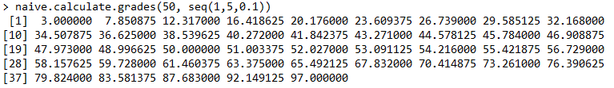

Problem Specification
It is of interest to factor individual contributions into overall team score.
Input:
Team grade. Single numeric in [0,100]. Given by those outside the team.
Individual rating vector. Numeric in [1,5]. Each element represents the average rating given to an individual by the other members in the team.
Output:
Final grade vector. Numeric in [0,100]
Function:
It is helpful to think of calculate.grades as first producing an adjustment vector, and secondly returning the combination of this adjustment vector with the team grade.
Desired Behavior (DB):
(1) Individuals that perform as expected should receive the group grade; no adjustment is necessary.
(2) An individual performance very different to what is expected should yield a very large adjustment. As they perform closer to expectations, the change should be increasingly less extreme.
(3) Bad groups should receive stronger adjustments. Those contributing to the negative environment are punished more harshly while those fighting for a positive one are rewarded more. Consequently, good groups will receive weaker adjustments.
(4) Output grades are continually distributed in [0,100]. No jumps, holes or corners likely resultant from crude if-else grade determination.
Key Assumptions (KA):
(1) Individual rating is normally distributed around 3.
(2) We only have a few days to build and ship the model.
Thought Process
Initial Trial and Error
First I tried a fixed adjustment constant which was clearly insufficient (DB 2). Then I tried R's pnorm function which is a cdf-like adjustment. However this achieved the opposite effect to DB 2: differences in grades closer to 3 resulted in a larger overall grade change than those on the extremes.
I wanted a transformation with a steeper curve at the tails and flatter near the middle. A parabola came to mind however it didn't capture the negative well so I tried a cubic transformation. While it tended to work well with more typical inputs, there seemed to be issues with border cases. More specifically this was because I wasn't taking into account the 0-100 scale.
A sine transformation seemed like it could deliver (DB 4) as it is repeating and thus bounded in a fixed range. However I ran into huge complexities (KA 2) and the curvature was less desirable than the a polynomial transformation.
Building the Model
(i)
I decided that a model with a cubic and linear term was the best among my options. We could include two adjustment parameters a,b > 0 resulting in a (1) positively increasing function, (2) centered around the origin (3) with a parabolic derivative achieving our desired effect of decreasing change in grade closer to expected performance (at the origin).
y = ax^3 + bx where a and b are real scalars > 0

It was reaffirming to see that this approach produced what I thought to be a desirable output.
(ii)
At this point in time, our adjustment uses only the individual adjustment vector. It does not take into account our input/output [0,100] team grade interval.

We do not want a naïve cut-off of our function at one end and an "out of previously considered range" extension at the other (DB 4). This is what has happened in the visualization above: the purple curve is a team with a higher overall grade. On the right side, the curvature rewarding stronger individual performances is cut-off, while on the left side the punishment is extended. Since we are working with parabolic functions, this is very bad and our model would behave very unexpectedly when group grade is not the expected value.
One frame-of-mind we can take is to scale our adjustment mapping in proportion to how far along our curve is shifted. Therefore on the short side, the curve is "squished" while on the long side it "stretched".
We can compose such a ratio using team grade over expected team grade. We will consider expected team grade to be 50 for the sake of symmetry, although this is a harsh assumption as we probably do not expect half of the class to fail.
A simple ratio applied to our mapping would fall short: we want our ratio to be: (i) less than 1 and therefore reduce the severity of the raw adjustment values on the "shorter" side of 50 and (ii) greater than 1 and therefore increase the severity of the raw adjustment values on the "longer" side of 50. Therefore we can adopt an if-else piecewise approach for short-long side.
Since we are interested in specific points on the curve, we can save computation by completing the evaluation and subsequent scaling for these points - namely each entry in the rating vector. The aforementioned if-else is determined by the relationship between the actual and expected value, which we assume to be 3 (KA 1).
Let us consider the interval value for the shorter side. It's length will simply be from the grade value itself to it's closest extreme. For team grade values greater than 50 this is the value '100-team_grade' and for team grade values less than 50 this is the value 'team_grade'. The longer side is the opposite of the previous assignment. Thus our mapping of adjustments from our rating vector is now consistent between various input team grades.

Lastly, in case questionable parameters are used, we will round any values outside of [0,100] as necessary. Our current implementation reads:
current.calculate.grades <- function(group_grade, individual_ratings_vector, alpha=1.5, beta=10, theta=70) {
number_of_members <- length(individual_ratings_vector) total_rating <- sum(individual_ratings_vector) centered_ratings_vector <- individual_ratings_vector - 3
raw_adjustment_vector <- (alphacentered_ratings_vector)^3+betacentered_ratings_vector
bounded_adjustment_vector <- ifelse(centered_ratings_vector<0, raw_adjustment_vectorgroup_grade/theta, raw_adjustment_vector(100-group_grade)/theta)
final_grade_vector <- rep(group_grade, number_of_members) + bounded_adjustment_vector
final_grade_vector[final_grade_vector<0]<- 0 final_grade_vector[final_grade_vector>100]<- 100
return(final_grade_vector) }
(iii)
We now have a completely valid function. However in our problem specification (DB 3) we foresaw one key flaw: the possibility of the "gaming of the system" by non-genuine peer ratings. This problem is quite difficult to address with our current problem context, which considers only one set of work to grade rather than a series which otherwise might inform us of an individual's potentially malicious rating habits.
After informing superiors that an adjusted problem specification would yield better results, we use the only information we can. We incorporate a ratio between the observed sum of the individual ratings and the expected sum of individual ratings. From KA 1 this is 3 times the number of teammates. (Integrating some sort of prior/posterior probability or reputation system into this aspect of the model among a sequence of gradings would be so much fun!).
We sequence this non-genuine rating adjustment after our prior adjustments as we want to scale along the curve we have already worked out.

As our model satisfies all Desired Behaviors, it is time to ship our model (KA 2).
calculate.grades <- function(group_grade, individual_ratings_vector, alpha=1.5, beta=10, theta=70, zeta=1) {
#input validation can be put here :-]
number_of_members <- length(individual_ratings_vector) total_rating <- sum(individual_ratings_vector) centered_ratings_vector <- individual_ratings_vector - 3
raw_adjustment_vector <- (alphacentered_ratings_vector)^3+betacentered_ratings_vector
bounded_adjustment_vector <- ifelse(centered_ratings_vector<0, raw_adjustment_vectorgroup_grade/theta, raw_adjustment_vector(100-group_grade)/theta)
secure_adjustment_vector <- bounded_adjustment_vector * (number_of_members * 3 / total_rating) * 1/zeta #zeta>1 probably needed to reduce adjustment severity
final_grade_vector <- rep(group_grade, number_of_members) + secure_adjustment_vector
final_grade_vector[final_grade_vector<0]<- 0 final_grade_vector[final_grade_vector>100]<- 100
return(final_grade_vector) }
Reflection
Next Steps
Parameter adjustment is quite difficult, specifically with alpha and beta. We have included no input validation or support, but left it to the reader as an exercise (jokes!) It would be desirable to develop this for our users, especially because they might become frustrated and not utilize the potential of this function.
A key idea worth exploring is to standardize some sort of units across my axes. I can imagine that we lose out on some of the cubic curvature due to the fact we naïvely use a [-2,2] domain. As we know from it's derivative, the rate of change is less steep over [-1,1] and therefore the adjustment spacings will be different. Incorporating a domain-adjustment term would allow us to capture this (such a parameter is actually distinct from simultaneously increasing a and b due to the cubic term).
Learnings
Coming back to this project after a couple months forced me to:
Improve the clarity of my communication. What I thought made complete sense when I was familiar with the topic was no longer so clear.
Cautioned me of the potentially incongruous perspectives as you learn and deeper understand a topic. Something you explain as a feature might be an error in your judgement.
Made me more fully appreciate efficient code. I suspect that if someone saw just my raw code, they would miss a substantial amount of the reasoning behind it. After all, that is why I adopted this format of sharing my work.
Don't neglect testing. Be aware with the difficulties of comprehensive test cases when taking on zealous generalizations. Furthermore, beware of sloppy version control. I had commented out cutoff-rounding for bugfixing and then consequently removed them.
Thank you all for reading :) I would love to hear your perspective in the comments (which may or may not be implemented yet!). A follow-up is on my radar...